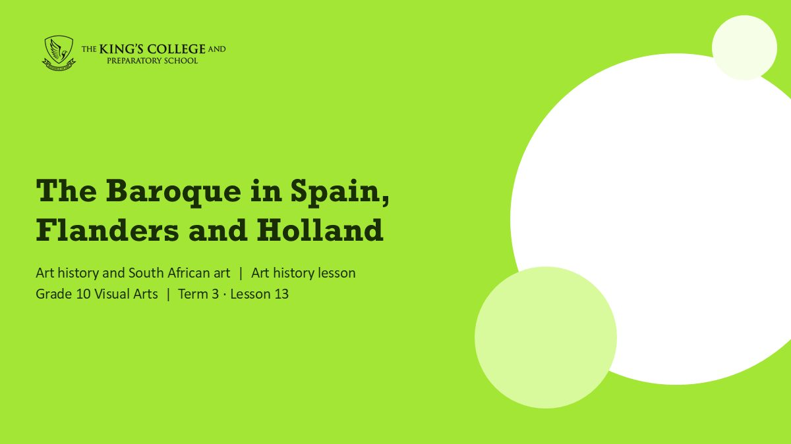

Term 3 · Lesson 13 · Art history lesson
The Baroque in Spain, Flanders and Holland
Start here
Today I will
- Describe Velázquez's Las Meninas and its game of looking
- Explain how Dutch Baroque art differed from Catholic Baroque art
- Analyse Las Meninas or a vanitas still life
A candle, a watch and a flower: what do these three ordinary objects have in common?
Words to Know
| Word | Meaning |
|---|---|
| Vanitas | A still life with symbols of the shortness of earthly life. |
| Genre painting | A painting of scenes from everyday life. |
| Still life | A painting of arranged objects such as fruit, flowers or vessels. |
| Impasto | Paint laid on thickly so the brushstrokes stand up from the surface. |
| Memento mori | 'Remember that you will die': an object or image reminding people of death. |
| Group portrait | A portrait of several people, often members of a guild or company. |
Slides

Videos
Notes
Velázquez's Las Meninas, Rubens, and the Dutch Republic: Rembrandt, Vermeer and vanitas still life.
Spain and Flanders: court and Church
- Diego Velázquez (1599 – 1660): Court painter to King Philip IV of Spain.
- Las Meninas (1656): The princess Margarita with her maids, a dwarf, a dog and Velázquez at his canvas. The king and queen show only in a mirror.
- The puzzle: Are we standing where the royal couple stand? Loose brushwork looks precise from a distance.
- Peter Paul Rubens (1577 – 1640): Antwerp painter and diplomat with a large workshop. The Elevation of the Cross (1610 – 1611) is full of diagonals and muscular movement.
The Dutch Republic: art for the market
- A new kind of patron: In the Protestant Dutch Republic, few churches had images, so merchants and citizens bought art on an open market.
- Rembrandt van Rijn (1606 – 1669): The Night Watch (1642) turns a militia group portrait into action. Late self-portraits use thick impasto and honest ageing.
- Johannes Vermeer (1632 – 1675): Quiet interiors in soft window light, such as The Milkmaid (c. 1657 – 1658).
- The vanitas: Skulls, snuffed candles, hourglasses, wilting flowers and books remind viewers that earthly life and wealth pass.
- Where the name comes from: From the Latin vanitas vanitatum, 'vanity of vanities' (Ecclesiastes 1:2); the NIV has 'Meaningless! Meaningless!'
The Dutch painted everyday life and reminded everyone it would not last.

Jesus warns against storing up treasures on earth and points to treasure in heaven. What would you place in a vanitas still life about your own life, and what would you want it to say?
Practical
You need: History booklet, visual journal, images on screen
Four-part analysis: Las Meninas or a vanitas
- Choose Las Meninas (1656) or the vanitas still life on screen and write a full heading.
- Describe: list what you see, the focal point and the mood.
- Analyse: use identify, describe, effect for tone and one principle (emphasis, balance or direction).
- Interpret: for the vanitas, explain three symbols; for Las Meninas, explain the mirror.
- Opinion: what is the artwork saying to its viewers, and does it still speak today?
Test yourself
- Identify three common symbols in a vanitas and explain their message.
- Explain why Dutch artists painted mostly portraits, landscapes, genre scenes and still lifes.
- Explain the role of the mirror in Las Meninas.
Show answers
1. Any three, such as a skull, a snuffed candle, an hourglass, wilting flowers or books: earthly life, wealth and pleasure are short. 2. The Protestant churches had few images, so artists sold to merchants and citizens on an open market. 3. It reflects the king and queen, suggesting they stand where the viewer stands and raising questions about who is being painted and who is looking.
Finished early?
Make a quick still life in the Dutch spirit.
- Arrange three objects from your desk, such as a pencil, a book and an eraser.
- Draw them in your VJ with strong light from one side.
- Add soft window-like light as Vermeer would.
- Note one way the Dutch art market differed from art made for churches.